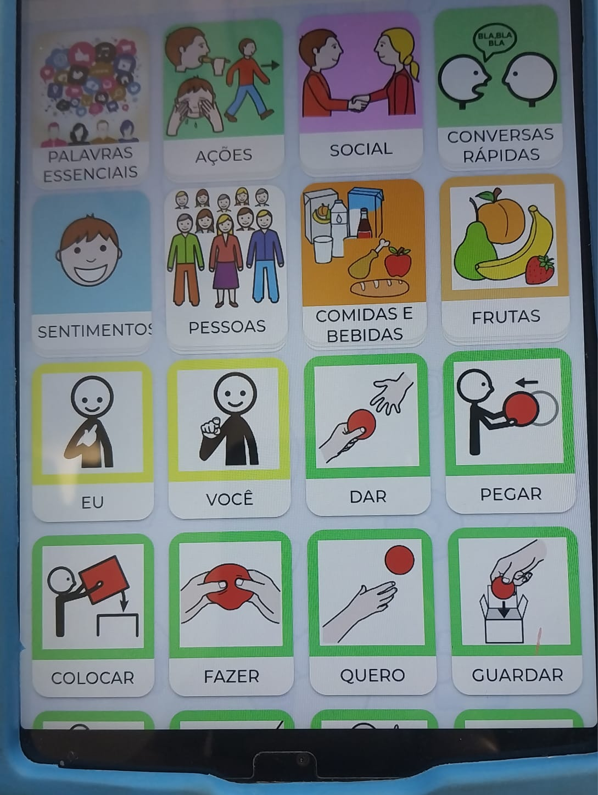
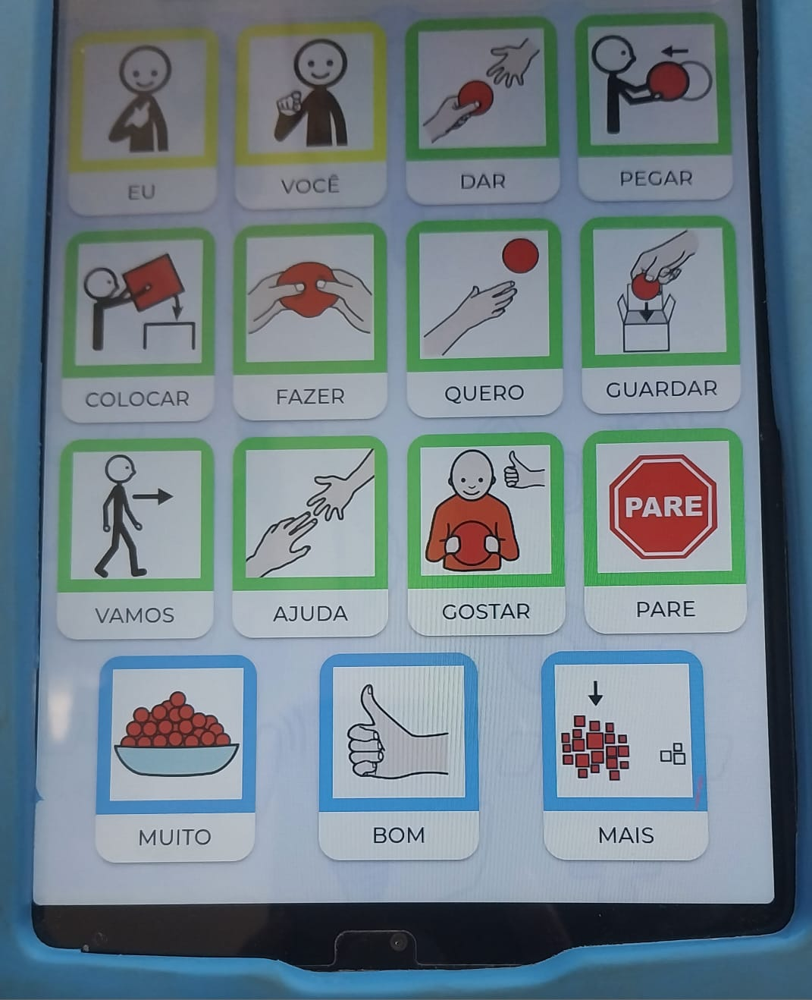

Treinamento para compreensão, aplicação e uso prático
Três dimensões que estruturam a comunicação humana
Linguagem interna ou humana
Capacidade de aprender a representar o mundo externo e interno por meio de símbolos e signos convencionados, a partir da interação com o outro, em qualquer curso do tempo.
Atenção: linguagem humana — sistema que depende do desenvolvimento biológico e do processo de aprendizagem. Qualquer interferência nesses aspectos pode gerar distúrbio ou atraso na estruturação da linguagem oral e escrita. Aquisição e uso são determinadas pela interação de fatores biológicos, cognitivos, psicossociais e ambientais.
Seu uso requer conhecimento de fatores associados:
Como: pistas não verbais (expressões faciais); motivação e papéis sociais (quem e com quem se está falando).
Código linguístico / Língua
Multidão de signos e símbolos isolados, dos quais cada um associa-se a um som particular e a um sentido particular. É o conjunto de unidades de sinais de cada idioma, combinadas de acordo com certas regras e que permite a elaboração de mensagens.
Língua é a correspondência entre imagens auditivas e conceitos.
Forma instrumental de se usar a língua para transmitir uma mensagem; Produção fonoarticulatória com intenção ou finalidade comunicativa; Resultado sonoro da movimentação dos órgãos fonoarticulatórios.
Seis pilares que orientam toda a prática comunicativa
Quem comunica tem vontade de falar com alguém?
O que queremos transmitir?
Como a mensagem é transmitida?
Com quem estamos dialogando
Onde e quando acontece
Qual o mínimo que a criança possui para se comunicar?
Comunicação Suplementar e/ou Alternativa
| Termo | Origem | Ênfase | Exemplos de uso |
|---|---|---|---|
| CSA | Termo mais usado no Brasil | Suplementa ou substitui a fala | Escolas inclusivas, terapias |
| CAA | Tradução direta do inglês AAC | Aumenta e amplia formas de comunicação | Clínicas, pesquisas internacionais |
Ensino pelo exemplo
Comunicador alternativo intuitivo, flexível e acessível
Interface e funcionamento

Pranchas e prática
